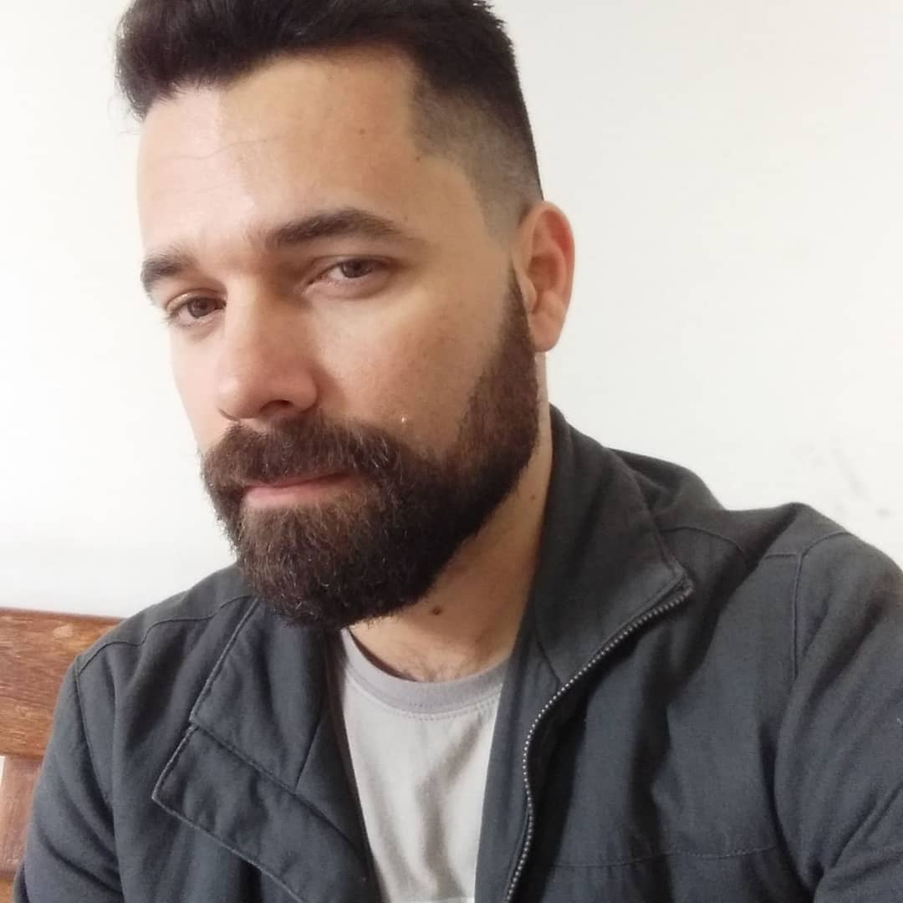

Home |
Profissional
Anderson Lopes

Brasileiro, católico, 39 anos, filho mais velho de Pedro e Terezinha. Tem duas irmãs e dois sobrinhos. Morou em Brigadeiro Tobias até os 36 anos e atualmente residente em condomínio de apartamentos no Alto da Boa Vista. Aluno do curso de Análise e Desenvolvimento de Sistemas do período noturno. Dentre alguns hobbys que possui, um dos principais é ouvir música.